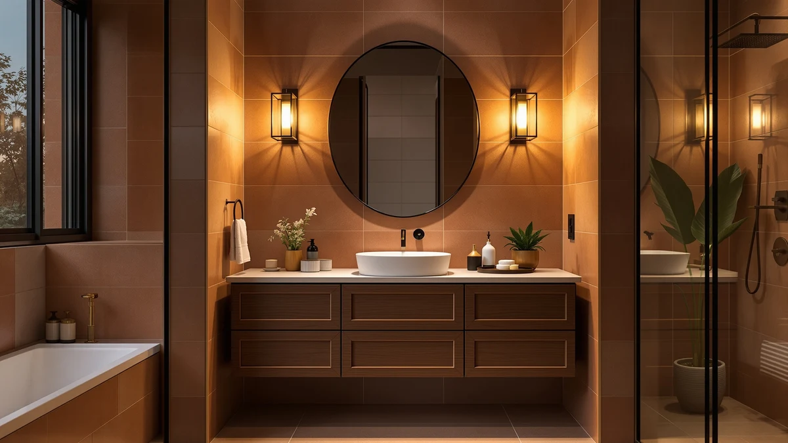

The Best 60-inch Bathroom Vanities (2026)
Prices and picks verified as of September 2026. Independent, reader-supported reviews.


Quick Answer
None of the vanities in this comparison ship as a single 60-inch cabinet, so the best 60-inch bathroom vanities on a real budget usually come from pairing two 30-inch or 24-inch units, or from combining a vanity with matching storage. Among the seven pieces we compared, from the $52.32 VASAGLE wall cabinet to the $458.68 FEELIN vessel sink, the APRILSOUL 24 Inch Bathroom Vanity is the strongest single unit, thanks to its 4.4-star rating across 8 reviews and built-in ceramic sink.
Our pick: APRILSOUL 24 Inch Bathroom Vanity — $265.99 Check Price on Amazon
Bottom line: our top pick is the APRILSOUL 24 Inch Bathroom Vanity with Ceramic Sink at $265.99. The best budget option is the VASAGLE LIRY Collection - Bathroom Wall Cabinet at $52.32.
Things to Know Before You Buy
- A 60-inch vanity is almost always two smaller units, not one cabinet. Manufacturers rarely sell a single 60-inch cabinet at this price point, so the practical route is pairing two 30-inch vanities like the Mirightone pair below, or a 24-inch cabinet plus matching storage.
- Price spans $52.32 to $458.68 across these seven pieces. The VASAGLE wall cabinet sits at the low end as a storage add-on, while the FEELIN vessel sink's $458.68 price covers a gold faucet and pop-up drain combo, not the basin alone.
- Four of the seven are complete cabinet-and-sink vanities. The APRILSOUL, both Mirightone 30-inch units, and the Smhxo include a ceramic basin built into the cabinet; the VASAGLE and GANPE are wall-mounted storage and mirror cabinets meant to complete the wall, and the FEELIN is a sink without a cabinet.
- Two of the picks are nearly the same 30-inch Mirightone vanity. The unbranded-listing "30 Inch Bathroom Vanity with Sink" ($215.99) and the "Mirightone 30" Vanity with Sink" ($198.99) share a black finish and ceramic basin, but trade drawer count for soft-close hardware, so compare the pros and cons below before assuming they're identical.
- Material is MDF or engineered wood across every full vanity here. None of these seven list solid hardwood construction throughout, so expect the moisture resistance and finish of an MDF cabinet rather than a hardwood one.
Finding the best 60-inch bathroom vanities gets harder than it should be, because almost nobody at a reasonable price point sells one cabinet that spans a full 60 inches. Most homeowners planning a 60-inch double-vanity wall end up combining two smaller cabinets instead, and that's the lineup we built for this guide: seven vanities, storage cabinets and a vessel sink you can mix and match to reach that width. We priced them from $52.32 to $458.68 and compared what each one actually includes, a full ceramic sink, a mirror with built-in lighting, or wall storage alone, so you know exactly what you're buying before you commit to a layout.
The APRILSOUL 24 Inch Bathroom Vanity is our top pick among the standalone units, a walnut-finished, mid-century freestanding cabinet with a ceramic sink that holds a 4.4-star rating across 8 reviews, the only product here with a verified rating at all. Pair it with a second 24-inch or 30-inch cabinet, or add the GANPE LED mirror cabinet above it, and you get most of what a purpose-built 60-inch vanity offers for less than the price of a single premium 60-inch unit.
We researched these seven listings the way we research every roundup on this site, by comparing manufacturer specifications, published materials, and verified customer ratings where Amazon provides them, rather than installing each cabinet ourselves. Four of the seven, the APRILSOUL, the two Mirightone 30-inch vanities, and the Smhxo, come with a ceramic sink built into the cabinet. The other three, the VASAGLE wall cabinet, the GANPE mirror cabinet, and the FEELIN vessel sink, are the pieces that complete a wider vanity wall once the main cabinet is in place. Below, we break down why we picked each one, how we compared them, and where every product fits into a 60-inch bathroom layout.
Why You Should Trust Us
Best Bathroom Vanities focuses on one category of home fixture: the cabinets, sinks and mirrors that make up a bathroom vanity wall. Ilane Tall has spent years comparing vanity listings across price tiers and checking how published dimensions and materials hold up once several products sit side by side in the same comparison. For this guide on the best 60-inch bathroom vanities, we pulled pricing and specification data directly from each Amazon listing and cross-referenced material claims, like MDF construction or a stainless steel hinge, against what the manufacturer states in the product details. We don't run a paid testing lab and we don't invent expert quotes. We read the same listings you can, compare the numbers, and tell you where the value actually sits.
How We Picked
We started by pulling every vanity, cabinet and sink listed under the bathroom vanity category in our product database, then narrowed the group to seven listings with enough published detail, price, material, dimensions, to compare fairly. Because no single cabinet in that group spans 60 inches at this price range, we prioritized pieces that pair well toward that width: two 30-inch vanities, two 24-inch vanities, a matching wall cabinet, a lighted mirror cabinet, and a vessel sink for a custom build. We required a stated core material for every listing, which turned out to be MDF or engineered wood across all seven, so price differences here reflect finish, hardware and included features rather than a shift in build quality. We also noted which listings carry a verified Amazon rating; only the APRILSOUL has one, at 4.4 stars across 8 reviews, so we treated that as a meaningful signal rather than a tiebreaker.
How We Compared
Comparing a bathroom vanity before it ships to your house means comparing the published numbers and listed features, not a finished installation in someone's bathroom. For each of these seven products, we checked the listed price against the group's $52.32 to $458.68 range to see where it lands on the budget-to-premium scale, then checked what the listing actually includes, a ceramic sink and cabinet, storage only, or a sink without a cabinet. We compared stated dimensions where manufacturers published them, the VASAGLE's 7.9 by 23.6 by 28.7 inches and the GANPE's 28 by 20 inches are the most complete, and flagged listings, like the FEELIN vessel sink, where the product's own size field lists a placeholder value instead of real measurements. Where a listing specified a weight capacity, the Mirightone 30-inch Vanity with Sink's 250-pound base rating, or a specific feature like soft-close hardware, we noted it as a point of differentiation rather than folding everything into a single score.
Our Picks

APRILSOUL 24 Inch Bathroom Vanity
What we like
- Holds a 4.4-star rating across 8 reviews, the only verified rating among these seven products
- Ceramic sink integrated into a mid-century freestanding cabinet, not a basin you source and install separately
- Walnut finish and tapered styling stand apart from the black and white finishes on most of the other picks here
Flaws but not dealbreakers
- At 24 inches, it needs a second cabinet next to it to approach a 60-inch double-vanity layout
- Eight reviews is a small sample next to larger listings elsewhere on Amazon, so weigh it as directional rather than definitive
| Material | MDF / engineered wood |
| Size | 24 inch |
The APRILSOUL 24 Inch Bathroom Vanity is the clearest standalone pick in this comparison, mostly because it's the only one with a verified customer rating: 4.4 stars across 8 reviews. At $265.99, it costs more than the VASAGLE, GANPE, and Smhxo, but less than the FEELIN vessel sink, and it's the only listing here where you get a confirmed customer track record instead of only a manufacturer's specifications page.
Its walnut, mid-century freestanding design also reads differently from the black Mirightone pair and the white Smhxo. If you're building toward a 60-inch vanity wall, the APRILSOUL works as one half of a paired layout, set beside a second 24-inch or 30-inch cabinet, or as the anchor piece with the GANPE mirror cabinet mounted above it.

30 Inch Bathroom Vanity with
What we like
- Three large-capacity drawers plus a cabinet with interior storage racks, more compartments than the other 30-inch Mirightone below
- Solid wood frame combined with MDF panels, with a waterproof coating on both the interior and exterior
- Ceramic basin includes an overflow drain, a detail the cheaper Mirightone sink doesn't list
Flaws but not dealbreakers
- At $215.99, it costs $17 more than the nearly identical Mirightone 30" Vanity with Sink below, without a published rating to justify the premium
- No customer reviews are listed yet, so you're relying on manufacturer specifications rather than owner feedback
| Material | MDF / engineered wood |
| Size | 18.3"D x 30"W x 34"H |
This 30-inch Mirightone vanity leads with storage: three large-capacity drawers plus a cabinet with built-in door racks, more compartments than its closest competitor in this lineup, the Mirightone 30" Vanity with Sink two picks down. The solid wood frame and MDF construction carry a waterproof coating inside and out, and the ceramic basin includes an overflow drain, a feature the cheaper Mirightone sink doesn't mention in its own listing.
At $215.99, it's the second-most expensive of the four full vanities in this comparison, behind only the APRILSOUL. Since it doesn't carry a published customer rating, the case for choosing it over the cheaper Mirightone comes down almost entirely to the extra drawer and the overflow-drain detail on the sink.

Mirightone 30" Vanity with Sink
What we like
- Base rated to support up to 250 pounds, the only listing here with a published weight capacity
- Soft-close door hardware, a detail the pricier 30-inch Mirightone above doesn't mention
- Pure white ceramic basin pre-drilled for a 4-inch faucet, so standard faucet hardware fits without modification
Flaws but not dealbreakers
- Two upper drawers plus one bottom drawer offers less compartmentalized storage than the three-drawer Mirightone above
- No customer reviews are listed, matching most of the other picks in this comparison outside the APRILSOUL
| Material | MDF / engineered wood |
| Size | 30" |
The Mirightone 30" Vanity with Sink is the more refined of the two nearly identical 30-inch Mirightone vanities in this lineup. Its base carries a published 250-pound weight rating, the only vanity here with that figure stated outright, and its door closes on soft-close hardware rather than a standard hinge. The pure white ceramic basin comes pre-drilled for a 4-inch faucet, so you're not stuck sourcing a nonstandard fixture.
At $198.99, it undercuts the other 30-inch Mirightone by $17 while adding the soft-close hardware and weight rating that listing doesn't mention. The tradeoff is drawer count: two upper drawers and one deep bottom drawer instead of three large-capacity drawers, so if storage volume matters more than hardware refinement, the pricier Mirightone above may be the better fit.

VASAGLE LIRY Collection - Bathroom
What we like
- Lowest price in this comparison at $52.32, a fraction of what any of the four sink vanities cost
- Sliding barn doors plus a towel bar and 4 hooks add storage and hanging space a plain vanity cabinet doesn't offer
- Adjustable interior shelf with 3 height options fits taller bottles or shorter toiletries as needed
Flaws but not dealbreakers
- It's a wall-mounted storage cabinet with no sink or basin, so it can't replace a vanity on its own
- At 23.6 inches wide, it's narrower than the 24 and 30-inch vanities in this lineup, so measure your wall space separately before pairing them
| Material | MDF / engineered wood |
| Size | 7.9"D x 23.6"W x 28.7"H |
The VASAGLE LIRY wall cabinet is the outlier in this comparison: it's not a sink vanity at all, but a farmhouse-style storage cabinet meant to hang above or beside one. At $52.32, it costs a fraction of the four cabinet-and-sink vanities here, and its two sliding barn doors, adjustable shelf, towel bar and 4 hooks add the kind of everyday storage a standalone vanity cabinet doesn't include.
Measuring 7.9 inches deep by 23.6 inches wide by 28.7 inches tall, it's sized to complement a 24 or 30-inch vanity rather than replace one, which makes it a reasonable budget add-on if you're building toward a wider 60-inch wall and need somewhere to put towels and toiletries that won't fit in the vanity cabinet itself.

GANPE LED Lighted Bathroom Medicine
What we like
- Stepless dimmable lighting from 10% to 100%, plus 3 selectable color temperatures with a memory function
- Built-in sockets and USB ports at the mirror, useful for a shaver, toothbrush charger, or phone
- Mirrors mounted on both sides of the cabinet door, along with adjustable glass shelving inside
Flaws but not dealbreakers
- Like the VASAGLE, it has no sink or basin, so it adds lighting and storage rather than a second vanity
- At $249.99, it's priced close to the APRILSOUL, a full vanity with sink, so weigh whether lighting or a second basin matters more for your layout
| Material | MDF / engineered wood |
| Size | 28"L x 20"W |
The GANPE LED Lighted Bathroom Medicine Mirror Cabinet is the second non-vanity piece in this lineup, a wall-mounted mirror cabinet rather than a sink unit. Its lighting adjusts steplessly from 10% to 100% brightness across 3 color temperatures, warm white, natural light and bright white, with a memory function that keeps your last setting. Sockets and USB ports built into the cabinet let you charge a shaver or phone without running an extension cord across the counter.
At $249.99, it sits close to the APRILSOUL's $265.99 price, but you're paying for anti-fog lighting, double-sided mirrors and adjustable glass shelving rather than a cabinet and sink. It makes the most sense paired with one of the sink vanities in this comparison rather than bought as a standalone piece.

Smhxo Bathroom Vanity with Ceramic
What we like
- Lowest price of the four cabinet-and-sink vanities in this comparison, at $145.99
- Ceramic sink is designed without an overflow hole, which the listing says streamlines cleaning
- Stainless steel door hinges and an MDF wood frame keep the build straightforward and durable
Flaws but not dealbreakers
- No customer reviews are listed, so there's no verified track record the way the APRILSOUL has
- At 24 inches, it needs a second cabinet to approach a 60-inch layout, the same limitation as the APRILSOUL
| Material | MDF / engineered wood |
| Size | 24 Inch |
The Smhxo Bathroom Vanity with Ceramic Sink is the value pick among the four complete cabinet-and-sink vanities in this comparison. At $145.99, it undercuts the APRILSOUL by $120 and the cheaper Mirightone by $53, while still including a ceramic sink built into a white, two-door cabinet. The sink itself skips the overflow hole found on some vanities, which the manufacturer says makes daily cleaning simpler since there's no small opening to catch grime.
Construction relies on an MDF wood frame with stainless steel door hinges, and the listing states assembly takes 15 to 30 minutes with the included hardware. Like the APRILSOUL, it's a 24-inch cabinet, so building toward a 60-inch vanity wall means pairing it with a second unit rather than relying on the Smhxo alone.

FEELIN Bathroom Countertop Vanity Sink
What we like
- Includes a gold faucet and pop-up drain in the price, not only the ceramic basin
- 21-inch oval vessel sink in a bright pink finish stands out from every other product in this comparison
- Premium ceramic construction with a non-porous, easy-to-clean surface
Flaws but not dealbreakers
- At $458.68, it's the single most expensive product in this comparison, more than triple the Smhxo
- It's a countertop sink only, with no cabinet included, and the listing's own size field lists a placeholder value rather than real dimensions
| Material | MDF / engineered wood |
| Size | 1 |
The FEELIN Bathroom Countertop Vanity Sink is priced differently from everything else in this comparison because it's not a cabinet at all, it's a 21-inch oval vessel sink that sits on top of an existing counter or vanity base. At $458.68, it's the most expensive product here, more than three times the Smhxo's price, but that figure includes a gold faucet and pop-up drain combo, hardware you'd otherwise buy separately for any of the other sinks in this lineup.
The bright pink ceramic finish is the most distinctive look in this comparison, a departure from the black, white and walnut finishes on the other six picks. If you're finishing a custom 60-inch vanity counter and want a statement basin rather than a built-in cabinet sink, the FEELIN fills that role; if you need a complete cabinet, one of the four sink vanities above is the more direct fit.
Quick Comparison
| Product | Material | Price | Rating | Best for | Get it |
|---|---|---|---|---|---|
| APRILSOUL 24 Inch Bathroom Vanity | MDF / engineered wood | $265.99 | 4.4 | Best overall, only verified rating | View on Amazon → |
| 30 Inch Bathroom Vanity with | MDF / engineered wood | $215.99 | 4 | Most drawers, no rating yet | View on Amazon → |
| Mirightone 30" Vanity with Sink | MDF / engineered wood | $198.99 | 4 | Soft-close hardware, 250-lb base | View on Amazon → |
| VASAGLE LIRY Collection - Bathroom | MDF / engineered wood | $52.32 | 4 | Budget wall storage, no sink | View on Amazon → |
| GANPE LED Lighted Bathroom Medicine | MDF / engineered wood | $249.99 | 4 | Lighted mirror cabinet, no sink | View on Amazon → |
| Smhxo Bathroom Vanity with Ceramic | MDF / engineered wood | $145.99 | 4 | Cheapest full vanity with sink | View on Amazon → |
| FEELIN Bathroom Countertop Vanity Sink | MDF / engineered wood | $458.68 | 4 | Vessel sink with faucet included | View on Amazon → |
The Competition
Among the four complete cabinet-and-sink vanities, the APRILSOUL and Smhxo are the closest competitors on footprint, both 24 inches wide, but $120 apart in price. The APRILSOUL's verified 4.4-star rating across 8 reviews is the deciding factor; the Smhxo has no published customer feedback yet, so it's the better fit only if the lower price outweighs that missing track record.
The two 30-inch Mirightone vanities compete almost entirely with each other. The pricier listing adds a third drawer and an overflow drain on the sink, while the cheaper Mirightone 30" Vanity with Sink counters with soft-close hardware and a published 250-pound weight rating. Neither has a customer rating yet, so the choice comes down to which feature, extra storage or refined hardware, matters more for your bathroom.
The VASAGLE wall cabinet and GANPE mirror cabinet don't compete with the sink vanities directly since neither includes a basin. Between the two, the VASAGLE is the far cheaper option at $52.32 versus the GANPE's $249.99, but the GANPE adds lighting, sockets and USB charging that a plain storage cabinet can't match.
The FEELIN vessel sink stands alone in this comparison. At $458.68, it costs more than any other product here, but it's also the only one bundling a faucet and drain into the price, and the only complete basin without a companion cabinet, so it competes more with custom countertop builds than with the other six picks.
Across all seven, there's no single 60-inch bathroom vanity in this lineup, but the APRILSOUL 24 Inch Bathroom Vanity remains the strongest starting point for anyone assembling the best 60-inch bathroom vanities from smaller components, thanks to its verified rating and ceramic sink. Pair it with a second cabinet, or add the VASAGLE or GANPE for extra storage and lighting, to build out the full width.
Frequently Asked Questions
Does any single vanity in this comparison measure a full 60 inches?
No. The widest single vanity here is 30 inches, the two Mirightone vanities. None of the seven products list a 60-inch cabinet width, which reflects how this price segment of Amazon listings works: most homeowners planning a 60-inch double-vanity wall combine two 24 or 30-inch cabinets rather than buying one continuous unit. This comparison covers the vanities, storage and mirror pieces you would use to build that width.
What is the actual difference between the two Mirightone 30-inch vanities?
The pricier listing, at $215.99, includes three drawers, a solid wood frame with MDF panels, and a ceramic basin with an overflow drain. The cheaper Mirightone 30" Vanity with Sink, at $198.99, trades one drawer for soft-close door hardware and a published 250-pound base weight rating. Neither has customer reviews yet, so the choice comes down to whether extra drawer storage or refined hardware matters more to you.
Can I use the VASAGLE cabinet or GANPE mirror cabinet as a stand-in for a vanity?
No, neither includes a sink or basin. The VASAGLE LIRY is a farmhouse-style wall storage cabinet with barn doors and a towel bar, and the GANPE is a lighted mirror cabinet with sockets and USB ports. Both are meant to pair with one of the four cabinet-and-sink vanities in this comparison, not replace one.
Why does the FEELIN vessel sink cost more than any full vanity in this lineup?
Its $458.68 price includes a gold faucet and pop-up drain combo bundled with the ceramic basin, hardware you would have to buy separately for any of the other sinks here. It's also a countertop vessel sink rather than a cabinet, so you're paying for a complete installation kit on top of the basin itself, not a cabinet upgrade.
How much wall space do I need to fit two of these vanities side by side?
Pairing two 30-inch Mirightone vanities needs roughly 60 inches of clear wall space plus a few extra inches of clearance on each side for doors and drawers to open. Pairing two 24-inch vanities, like a second APRILSOUL or Smhxo, needs closer to 48 to 50 inches. Measure your actual wall space and account for door swing before ordering either combination.